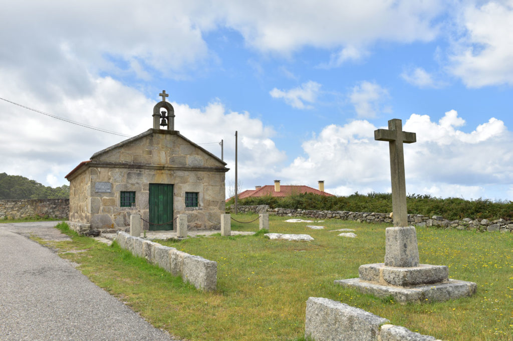
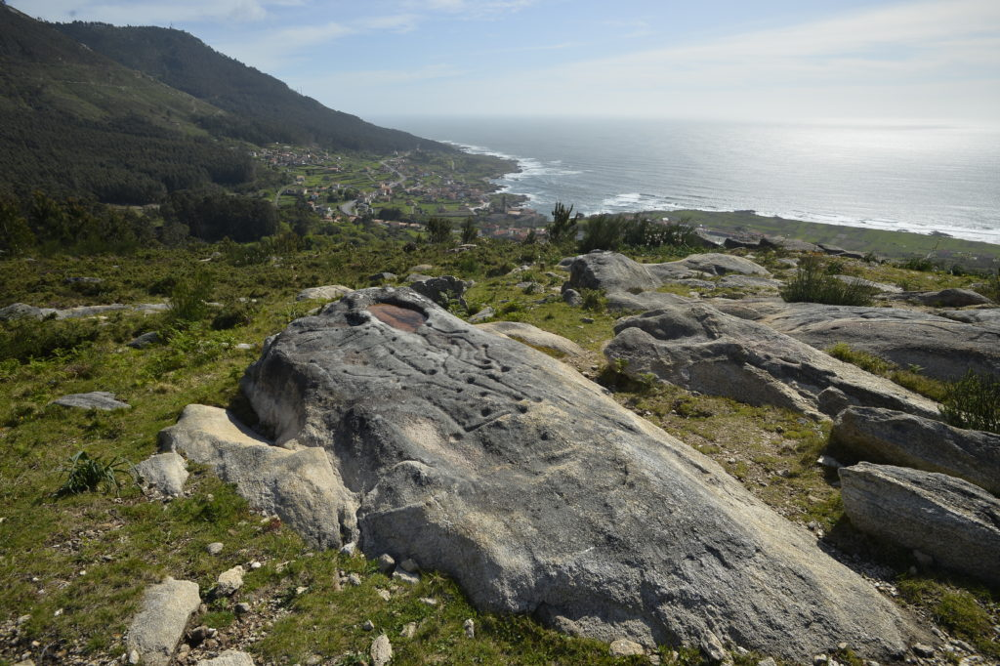
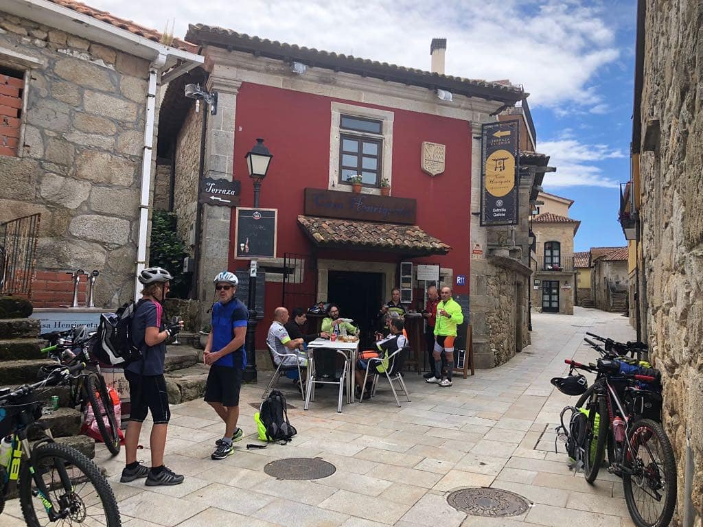
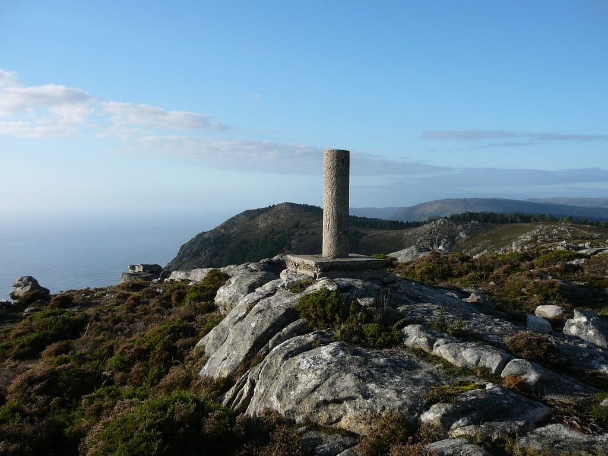

Mosteiro de Santa María de Oia, comezou a construírse a mediados do século XII, vinculado ós privilexios outorgados polo rei Alfonso VII. Comunidade rexida pola regra de san Benito, no ano 1185 pasou a formar parte da Orde do Císter. Pódense observar elementos arquitectónicos románicos, góticos e barrocos, froito das reformas sufridas desde a súa construción ata o século XX.
A capela de San Sebastián atópase ó final do Arrabal máis alá das casas do núcleo. A hermida orixinal estaba adicada a San Antonio, reconstruiuse en torno a 1770 e se traslada a imaxen de San Sebastián da antiga hermida situada en A Portela na montaña de Oia. A súa derradeira restauración é do ano 1993. A devoción por San Sebastián vai asociada ás epidemias dos séculos XV ó XVIII.
Petróglifos da Pedreira. Están situados na Pedreira.
A Camboa é unha tapería coa especialidade en carnes e bacalao á brasa e bacalao á portuguesa.
Casa Henriqueta. Restaurante de cocina tradicional galega, trato personalizado para os clientes. Está ao pé do Mosterio de Oia con vistas na terraza.
Restaurante O Lugar dispón de varios salóns e amplos xardines para facer eventos, como unha voda, comedores con vistas ao mar e unha ampla Carta de mariscos, pescados e carnes.